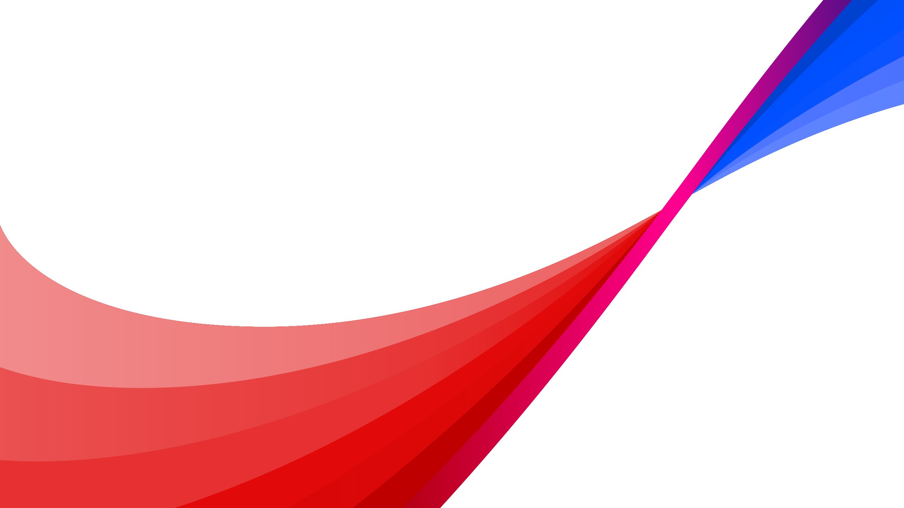

Virgin Media O2 Business — full-year strategy update.
01
UK connectivity, regulatory shape, where we're growing.
02
Fibre, 5G rollout and the nexfibre wholesale story.
03
VMO2 Business, public sector wins, partner pipeline.
04
NPS, churn, the Volt bundle effect.
05
Revenue mix, capex profile, FY guidance.
06
Open the floor. Press and analyst questions.
Substantial Group is one of the UK's largest alternative fibre providers. This also includes the fibre network, Netomnia, and the retail ISPs YouFibre and Brsk, and will bring around 500,000 new customers to the VMO2 family.
For now, nothing changes. nexfibre will begin the regulatory approval process. In the meantime VMO2, YouFibre and Brsk continue to operate independently. We're aiming to complete later this year.
Network
99.9% 4G population coverage and 5G in every major city. We've added 2,000 mast upgrades this year alone.

Customers connected
47m
Across mobile, broadband, TV and IoT — making us the UK's largest connectivity business by some margin.
Q2 2026
Substantial Group deal close
Regulatory approval secured; integration begins.
Q4 2026
5G standalone live
Switch-on across the top 12 UK cities.
2026
3M fibre upgrades
VMO2 cable premises moved to full fibre.
Q1 2027
Volt 2.0 launch
Refreshed cross-brand bundle pricing.
2027
8M full-fibre homes
Headline UK coverage target reached.
Lutz Schüler
Chief Executive Officer
Patricia Cobian
CFO
Jeanie York
CTO
Gareth Turpin
MD, Business
Nicola Green
Corporate Affairs
Simon Akers
Mobile
Helen Brown
Fibre & Networks
David King
Public Sector
Ria Larson
Partners & Wholesale
We're not just a telco any more. We're building the UK's most ambitious connectivity company — and we're doing it together with our customers.